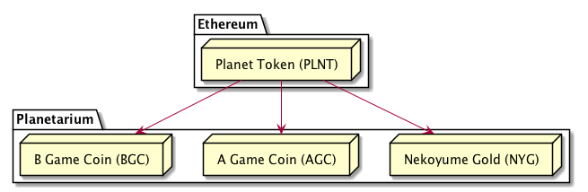

플라네타리움: 게임에 탑재하기 쉬운 블록체인 엔진¶
배경¶
수 많은 게임이 출시 이후 게임사의 사정에 의해 더 이상 온라인 기능을 즐기지 못하는 상황에 자주 부딪혀 왔습니다. 그렇기 때문에 중소 규모의 개발사가 출시하는 게임의 온라인 재미 요소는 매우 제한적일 수밖에 없었습니다. 블록체인 기술은 이에 관한 많은 문제를 해결할 수 있지만, 현행 블록체인을 그대로 게임에 도입 하는 것에는 여러 장벽이 있습니다.
- 현재 주류 블록체인의 수수료 체계는 개별 게임 경제와 괴리가 큽니다.
- 게임과 상관 없는 모든 거래 기록이 원장에 담긴 주류 블록체인을 게임에 도입하는 것은 비효율적입니다.
- 블록체인을 게임 클라이언트에 접목시키는 것에는 높은 난이도가 요구되었습니다.
현 주류 메인넷의 높은 수수료¶
이더리움과 같은 현재 주류 블록체인의 메인넷에서 게임을 개발하기 위한 시도가 여럿 있어왔습니다. 크립토 키티를 비롯하여 수 많은 이더리움 기반 게임이 출시되고 있지만, 모두 행동당 비싼 수수료를 내야 했기 때문에 유의미한 사용자를 끌어모으는데 실패하고 있습니다.
주류 블록체인 도입의 비효율성¶
2018년 6월 기준, 이더리움의 풀 노드 용량은 500기가가 넘으며, 비트코인의 풀 노드 용량은 200기가가 넘 습니다. 게다가 대부분의 트랜젝션은 이제 막 시작하는 게임에게는 의미가 없는 정보이기 때문에, 게임사가 이를 위해 주류 블록체인을 게임에 접목 시키는 것은 비효율적입니다.
블록체인 도입에 대한 높은 난이도¶
블록체인을 게임에 쉽게 도입시키려면, 그만한 도구의 지원이 필요합니다. 예를 들어, 이더리움의 경우 웹 기반 DApp을 쉽게 개발할 수 있도록 web3.js라는 도구를 만들어 함께 배포하고 있고, 이는 DApp 생태계에서 필수적인 존재가 되었습니다. 하지만 현재 게임을 위한 이런 지원은 전반적으로 매우 미비한 편입니다.
플라네타리움이란?¶
플라네타리움은 게임을 위한 블록체인 코어 엔진입니다. 플라네타리움을 이용하면 누구나 자신의 게임에 블록체인을 쉽게 탑재하고, 해당 게임을 위한 자체 메인넷을 빠르게 런칭할 수 있습니다.
플라네타리움의 특징¶
플라네타리움은 이와 같은 문제를 해결하기 위해, 게임개발자라면 누구나 쉽게 블록체인을 붙일 수 있는 형태의 엔진을 고안하였습니다. 제공하고자 하는 것은 아래와 같습니다.
- 해시 랜덤을 포함한 게임용 빌트인 함수와 컨센서스 제공
- 쉽게 개발 가능한 네이티브 스마트 콘트랙 확장 기능 제공
- 주요 게임 클라이언트용 연동 키트 제공
이와 같이, 플라네타리움의 목표는 통상의 게임 서버보다 간단한 방법으로 온라인 요소를 블록체인 기반으로 구현하고, 이를 게임클라이언트에 붙일 수 있도록 돕는 것입니다.
컨센서스¶
플라네타리움은 블록 생성의 합의 알고리즘을 메인넷을 출시하는 초기 커뮤니티가 선택할 수 있도록 다양한 옵션 을 제공하고자 하고 있습니다.
| 이름 | 특징 | 체결속도 | 중앙화여부 |
|---|---|---|---|
| 작업 증명 (PoW) | 누구나 블록을 생성 | 15초 | 낮음 |
| 위임된 지분 증명 (DPoS) | 투표로 선출된 노드가 블록 생성 | 4초 | 중간 |
| 권위 증명 (PoA) | 지정된 참여자가 블록 생성 | 1초 | 높음 |
작업 증명 (Proof of Work)¶
가장 보편적으로 사용되기를 권장하는 방법입니다. 체결 속도는 블록이 전체 네트워크에 전달되는 시간을 고려 하여 15초의 체결 시간을 가지나, 가장 탈중앙화된 방식으로 누구나 블록을 생성할 자격을 가지게 됩니다. 첫번째 게임인 네코유메는 작업 증명 방식을 채택하고 있습니다.
위임된 지분 증명 (Delegated Proof of Stake)¶
게임 내 가상 화폐를 이용한 투표로 선출된 N명의 노드가 블록 체결 권한을 가지는 방식입니다. 후술할 권위 증명보다는 비용이 있지만 투표를 통한 공정성을 갖추면서 빠른 체결 속도를 끌어낼 수 있습니다.
권위 증명 (Proof of Authority)¶
노드 내 지명된 N명의 참여자만이 블록 체결 권한을 가지는 방식입니다. 이는 중앙화된 방식이지만 투명한 방 법으로 최상의 속도를 내는 블록체인이 필요할 때 쓸 수 있는 방법입니다.
사용 시나리오¶
MMORPG¶

플레이어의 모험 기록을 블록체인에 담는 것으로 MMORPG를 구현할 수 있습니다. 서버가 없이도 플레이어의 레벨, 능력치, 그리고 재화 가치가 블록체인에 의해 보존됩니다. 모든 플레이어의 상태값은 누적된 트랜젝션의 총합이므로, 블록체인 내 상태값 연산량은 선형적으로 증가하지만, 이는 체크포인트를 주기적으로 합의하는 방식으로 연산량을 통제할 수 있습니다. 현재 플라네타리움 엔진 기반으로 네코유메를 개발하고 있습니다.
스테이지형 게임¶

스테이지 개념이 있는 퍼즐 게임이라면, 스테이지를 사용자가 만들고 공유하는 기능을 탑재하여 게임의 수명을 비약적으로 연장시킬 수 있습니다. 대표적인 예로 마리오 메이커와 같은 게임이 있습니다. 이 게임 스테이지를 블록체인에 담는 것으로, 중앙 서버 없이 플레이어에 의해 무한히 확장하는 게임을 개발할 수 있습니다. 불필요한 스테이지가 쌓이는 것을 막기 위해, 플레이어는 스테이지 정보와 함께 클리어 리플레이 기록을 함께 제출해야 하며, 이를 이용해 각 노드가 스테이지의 유효성을 검증할 수 있습니다.
격투 게임¶

최근의 온라인 지원 격투 게임은 서버/클라이언트 구조를 이용해 격투 기록을 보관하고, 이에 근거한 랭킹 시스템을 탑재하고 있습니다. 대표적인 예로 반다이남코사의 철권이 있습니다. 플라네타리움에 플레이어간 격투 기록을 보관하고, 각 노드가 격투 기록의 유효성을 검증하는 것으로 중앙 서버가 없이도 랭킹 시스템과 매칭 시스템을구현할 수 있습니다.
토큰 모델¶
플라네타리움의 개발과 플라네타리움 생태계의 활성화를 위해 플래닛 토큰을 발행할 예정입니다. 플래닛 토큰 을 통해 플레이어는 더 나은 게임 경험을 즐길 수 있습니다.
플래닛 토큰이란?¶
플래닛 토큰은 플라네타리움 엔진 기반 게임에서 활용 가능한 토큰을 분배받을 수 있는 이더리움 ERC-20 토큰입니다. 플래닛 토큰을 보유하고 있으면, 향후 플라네타리움 기반으로 출시되는 메인넷에서 해당 토큰에 비례한 만큼의 게임 코인을 분배받게 됩니다.
플래닛 토큰과 플라네타리움 코인의 관계¶

예를 들어, 플래닛 토큰을 50개 보유하고 있는 사용자가 있다고 가정해봅시다. A게임이 이더리움 500만번째 블록 시점에서 메인넷을 런칭하고, 해당 사용자가 500만번째 블록에서 플래닛 토큰을 50개 보유하고 있다면, 500만번째 블록 이후에 사용자는 아래와 같이 코인을 보유하게 됩니다.
- 플래닛 토큰: 50
- A게임 코인: 50
추후, 해당 사용자는 이더리움 501만번째 블록 시점에서 플래닛 토큰 30개를 다른 사용자에게 판매했다고 가 정해봅시다. 이 때, 사용자는 아래와 같이 코인을 보유하게 됩니다.
- 플래닛 토큰: 30
- A게임 코인: 50
A게임 코인은 500만번째 블록 시점에서 '지급받은' 것이기 때문에, 플래닛 토큰을 판매한다고 하더라도 보유 량은 변하지 않습니다. 추후, 이더리움 510만번째 블록 시점에서 B게임이 출시되며 플라네타리움 엔진을 채택하였습니다. 해당 사용자가 이후 별도의 플래닛 토큰 거래가 없었다면 사용자의 토큰 보유량은 아래와 같이 됩니다.
- 플래닛 토큰: 30
- A게임 코인: 50
- B게임 코인: 30
아와 같이, 플래닛 토큰은 플라네타리움 엔진용 게임에 필요한 코인을 받을 수 있는 권리 증서와 같은 개념으로 동작합니다.
토큰 분배¶
토큰 발행 이벤트¶
개발 초기 시점인 2018년 8월에 메인넷에서 사용할 수 있는 플래닛 토큰을 이더리움 ERC20 토큰 형태로 발행할 예정입니다. 총 발행량의 40%를 활용할 예정이며, 이는 메인넷 런칭 이후 가장 먼저 사용할 수 있는 방법입니다.
파트너 프로그램¶
플라네타리움 엔진을 기반으로 게임을 개발하는 초기 파트너사가 게임을 개발하기 위한 재원을 확보하는데 활용합니다.
시장 활성화¶
전체 발행량의 10%는 초기 플레이어 커뮤니티를 확장하기 위한 마케팅을 위해 활용합니다.
코어팀에 합류하기¶
향후 1년의 집중 개발 기간동안 코어팀에 참여하시는 분들께 예약된 10%의 토큰을 기여량에 비례하여 분배할 예정입니다. 1번과 마찬가지로, 초기 집중 개발을 위한 보상 방법입니다.
개발 커뮤니티 합류하기¶
향후 1년의 집중 개발 기간동안 주요 이슈 해결에 참여하는 모든 개발 커뮤니티 분들께 예약된 10%의 토큰을 기여량에 비례하여 분배할 예정입니다. 이 영역에는 어드바이저를 위한 분배가 포함됩니다.